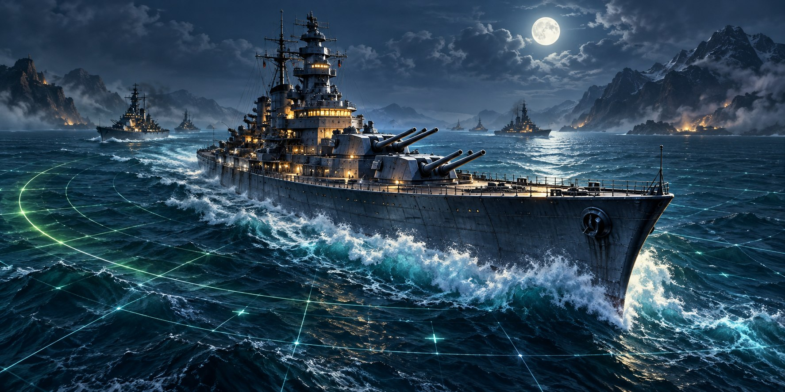

Игры с друзьями
Морской бой
Классический · 10 × 10

Опережай соперника.
Игры с друзьями
Настройте свой бой
Классический морской бой
10 × 10 · 10 кораблей · без касаний
Сила бота
Бот не видит ваши корабли и стреляет по тем же правилам.
Игры с друзьями
Морской бой
Ваш флот0 из 10 кораблей
Выберите корабль, затем его начальную клетку. Нажмите на установленный корабль, чтобы убрать его.
Соперник
Цель: —● Мимо · × Попадание
Игры с друзьями
Ваш стол
Классический морской бой
Два игрока · поле 10 × 10 · десять кораблей
Стол появится в онлайн-списке. Друга можно пригласить по коду.
Уже пригласили?
Присоединитесь к столу друзей
Адрес сервера игры
Код игры
Продиктуйте или перешлите код другу.
····
Ждём друга…